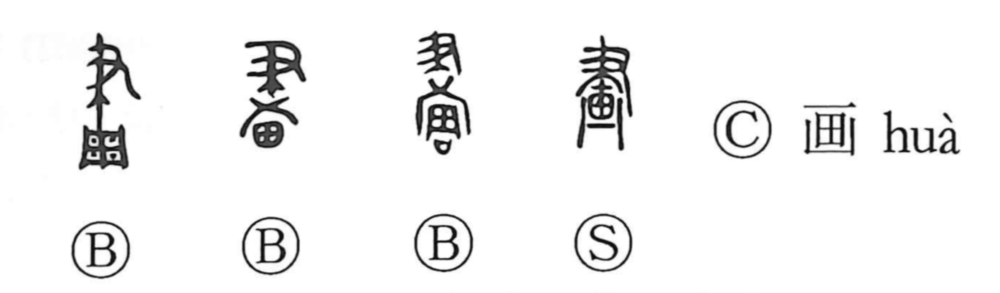

画

Kun: e, egaku | On: ga, kaku
picture ・ drawing ・ to draw ・ to mark off
Explanation
画, formerly 畫, combines 聿, a writing brush, with 田. Here 田 is the earliest form of 周, a rectangular shield whose face was divided into decorated sections. 畫 shows the brush laying out the pattern on that surface. It names both the act of drawing and the design produced.
A pattern needs its divisions marked clearly. From arranging these fields of decoration come drawing a line, marking a boundary, and dividing an area. Considering how the design should be arranged also gives planning and devising. The picture sense is read ga in Japanese; the senses of division and planning commonly use kaku. 劃 makes the cutting or marking of the divisions explicit with 刀.